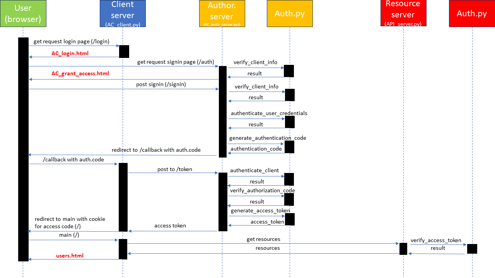

My portfolio.
Authorization server (OAuth based)


In this project, 3 servers are developed: a client server, an authorization server and a resource server. A user goes to the authorization server via the client server. The user authenticates to the authorization server without revealing the credentials to the client server. The client server can access the resource on the resources server on behalf of the user by means of an access code which can be checked by the resources server. Note: this project was inspired by the following tutorial.

The following techniques were used:

A visual impression:
© 2023 Marc Bruyland.